The causes of homelessness vary across many different major cities. However, the major causes transcend geographic boundaries. According to a global study conducted by the Homeless World Cup in 2005, the root causes for homelessness are:
(The diagram to left is a survey provided by WINNYC, one of the largest shelter providers in the NYC area.)
Camps are the most common forms of shelter that homeless people occupy. Without adequate access to shelter facilities, homeless individuals have to rely on tents and different structures for minimal safety and warmth. A famous reference to this living style is Skid Row in Los Angeles, CA. Recently California legislation has demanded the campsites to be demolished, displacing tens of thousands of houseless people in the county. These challenges, amongst others like issues with safety, reliability, and warmth create challenges and prevent this structure from being a long term solution to houselessness.
Another form of shelter that homeless people occupy are pre-established city infrastructure. Many homeless people rely on the infrastructure in their communities as a means for resources due to a lack of access to resources for temporary housing like shelters. Many city governments have implemented anti-homless modifications to various structures like spikes on benches, slanted sidewalks and curbs, etc. These structures are unstable housing options for homelessness people due to lack of safety, its weather-permitting nature, and lack of comfort and privacy.
Homeless shelters are the go-to for homeless people in NYC, especially for families in need. The NYC Department of Homeless Services (DHS) system of homeless shelters provide emergency, temporary shelter, for individuals as well as families in need. If you are a homeless family, single adult, or a single pregnant woman, you can apply to enter the shelter system at one of many intake centers around the city.s